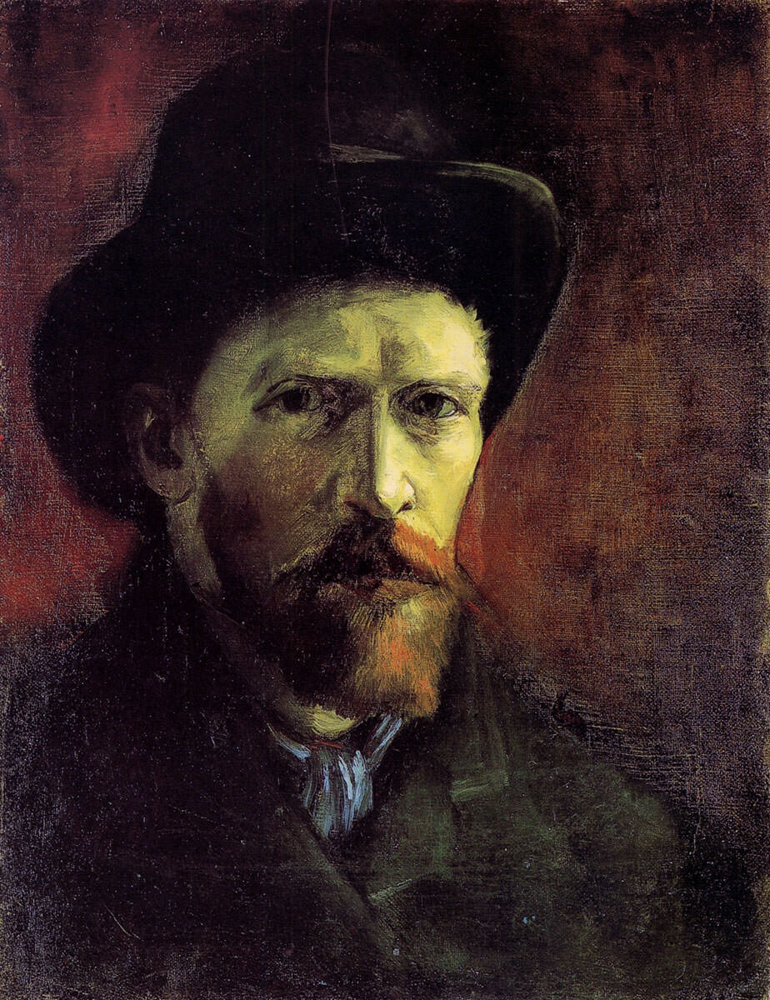
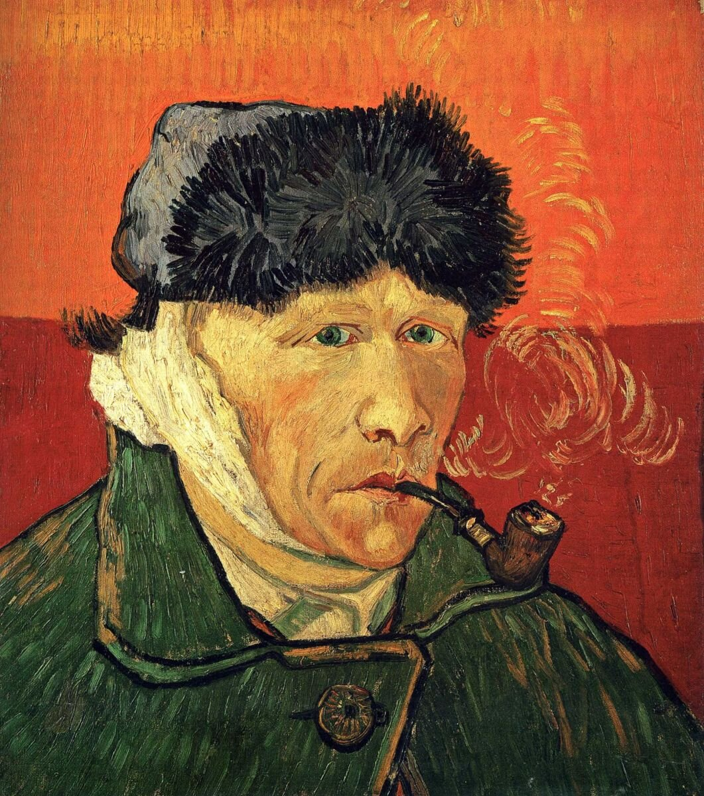
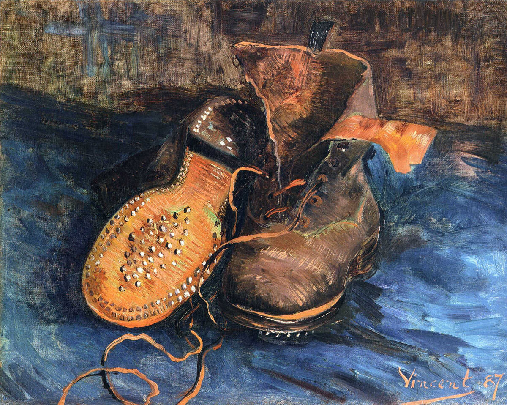
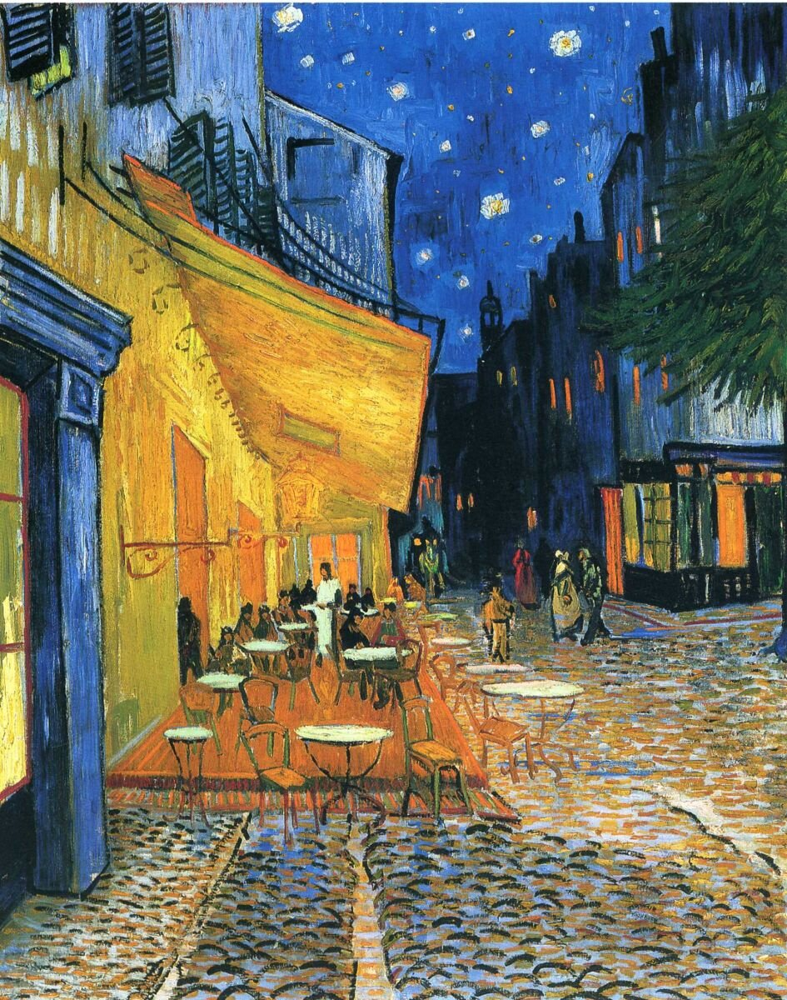
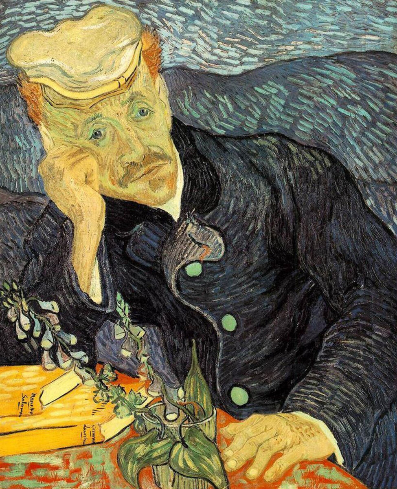

Винсент Виллем Ван Гог. Яркий пример небывалого мифотворчества. 90% того, что мы знаем об этом художнике неправда, вымысел… попросту наглое вранье. И это особенно удивительно, ведь от Ван Гога осталось много письменных источников, его писем брату и друзьям.


Главным идеологом мифа о гении-безумце стал немецкий галерист Юлиус Мейер-Грефе. Именно он последовательно выдумал весь этот бред, который упорно держится в общественном сознании вот уже 100 лет. А причина проста и тривиальна — бабло. Юлиус был все-таки не плохим искусствоведом и начал покупать Ван Гога, надеясь на скорые продажи и рост цен. Но что-то как-то не поперло сперва. Тогда он и решил создать миф о гениальном, необразованном, нищем психе-истеричке.


Настоящий Винсент имел мало общего с безумцем Мейер-Грефе. Он окончил престижную частную гимназию, свободно говорил и писал на трех языках, учился в трех художественных учебных заведениях и у нескольких признанных художников того времени. В художественных парижских кругах за эрудицию и знание мировой истории искусства получил кличку Спиноза. За Ван Гогом стояла большая семья, которая рулила так или иначе чуть ли не половиной рынка антиквариата и продажи искусства Европы! Даже смерть Ван-Гога вранье. Хотя, это отдельный разговор… Фильм, рисованный «ВИНСЕНТ, С ЛЮБОВЬЮ», предлагает свою версию.


Более противоречивого персонажа трудно себе представить. Человек, который соединил в себе массу противоположных черт и, чьи поступки часто не поддаются однозначному пониманию. Самое удивительное, что даже внимательное чтение его писем (был у меня период исследовательского энтузиазма и я их прочитал) не дает ответа на многие спорные моменты его жизни. Потому как и в письмах он тоже очень противоречив. Иногда у меня складывалось мнение, что он инфантильный неудачник, иногда, что он одержимый, а иногда, что он скрытый прагматик, которому просто не хватило времени.
Сегодня картины Ван Гога стоят миллионы долларов, неизменно вызывая ажиотаж на арт-аукционах.


Однако, расхожее представление о том, что во время жизни его работы были никому не нужны и он продал только одну картину (Красные виноградники в Арле, которая находится сейчас в Пушкинском музее) — не совсем верно. Пусть и не за большие деньги, но вполне приемлемые для неименитых художником своего времени, произведения Ван Гога вполне продавались. И его братом и им самим, как за деньги, так и в обмен на книги, гравюры, художественные материалы и аренду жилья. Обычная история для художников неакадемического толка конца 19 века.
Если вкратце изложить его биографию, то получится примерно так:
1853, 30 марта — Родился в деревне Гроот Зюндер, Северный Брабант, Голландия.
1857 — Родился его брат Тео.
1864 — Начало учебы в школе-интернате в Зевенбергене.
1866 — Обучение в государственной школе-интернате в Тилбурге.
1869 — Начало работы продавцом-консультантом в гаагском отделении художественной галереи компании Гупиль.
1873 — Работает продавцом Гупиль в Брюсселе и Лондоне, постоянный посетитель музеев и книжных лавок. Очень много читает, изучая историю мирового искусства. 430-
1876 — Увольнение из фирмы Гупиль, работа учителем в Рамсгейте, затем проповедником в Айлуорте, пригороде Лондона.
1877 — Работа в библиотеке в Дордрехте, готовится к вступительному конкурсу на теологический факультет. Затем отказывается от поступления и уезжает служить проповедником в Боринаж, Бельгия. Начинает серьезно рисовать.
1880 — Заключает договор о финансовой поддержки с братом Тео. Переезжает в Брюссель, много копирует работы мастеров, например Милле, учится в Академии живописи, рисует пейзажи.
1882 — Переезжает в Гаагу. Берет частные уроки живописи у Антона Мауве. Разрабатывает разные живописные приемы. Предпочтение отдает темной, землистой живописи. Переезжает с места на место, странные романы с проституткой Син, с Марго Бегеман. Смерть отца, отказ от наследства в пользу брата Тео.
1885 — «Едоки картофеля», основное произведение голландского периода.
1886 — Поступает в Академию изящных искусств в Антверпене.
1886 — Учится в школе-мастерской Кормона в Париже, знакомится с Тулуз-Лотреком, Писсарро, Бернаром, Гогеном, Сера и в целом, со школой французского импрессионизма. Постепенно в творчестве Винсента появляется цвет.
1886 — Картины «Натюрморт с открытой Библией», «Башмаки», «Автопортрет с трубкой».
1888 — Переезжает на юг, в Арль, снимает там «Жёлтый дом» под жильё и мастерскую. В Париже на выставке «Независимых» выставляют несколько его картин. Затем в Арле приезжает Гоген для совместной работы. Творят, спорят, мирятся, конфликтуют. После отъезда Гогена, Винсент в состоянии душевного кризиса попадает в лечебницу, где проведет около года.
1988 — Картины «Жёлтый дом», «Звездная ночь», «Звездная ночь над Роной», «Дорога с кипарисом и звездой», «Ночная терраса кафе», «Портрет Армана Рулена», «Лодки на Роне», «Портрет матери», «Валуны и дуб», «Палата Арльзкой больницы»,
1889 — Выписывают из клиники. Много работает, несмотря на постоянно возвращающийся душевный и творческий кризис. Участвует в нескольких выставках.
1889 — картины «Звездная ночь», «Подсолнухи», «Ирисы», «Цветущие ветки миндаля», цикл «Больничный сад», «Автопортрет с отрезанным ухом и трубкой», «Красные виноградники в Арле».
1890 — Выходит большая статья Альбера Орье о Ван Гоге, как о великом современном художнике. Большой успех на очередном Салоне Независимых в Париже. Переезжает в Овер под наблюдение доктора Гаше. Пишет около 100 картин.
1890 — Картины «Пшеничное поле с воронами», «Церковь в Овере», «Портрет доктора Гаше», «Пшеничные поля в Овере под облачным небом», «Равнина близ Овера», «Домики с соломенными крышами у холма», «Пейзаж в Овере в дождь», «Поля», «Поле с пшеничными скирдами», «Сад Добиньи», «Воскрешение Лазаря (по Рембрандту)», «Молодая крестьянка в соломенной шляпе в пшенице», «Девушка и пшеница на заднем плане».
1890, 29 июля — Винсент Ван Гог умирает от выстрела в грудь, официальная версия — самоубийство.
Если бы Ван Гог не умер так рано, то вполне вероятно, повторил бы судьбу Моне и стал классиком при жизни, уважаемым и состоятельным. И на ниве признания справился бы со своими психологическими проблемами. Но, как говорится, если бы, да кабы…


Одно можно сказать наверняка — художник он выдающийся, сильно повлиявший своим творчеством на все последующее искусство!
Винсент, письмо брату Тео, 5 апрель 1882: «Какая увлекательная вещь — увидеть предмет и, найдя его прекрасным, думать о нем и крепко удерживать его в памяти, а потом взять и сказать: «Я нарисую его и буду над ним работать, пока он не обретет жизнь!» Если бы ты стал художником, ты, наверно, многому бы удивлялся и, в частности, тому, что живопись и все связанное с нею — радостная, но подлинно тяжелая работа с точки зрения физической: помимо умственного напряжения и душевных переживаний, она требует еще большой затраты сил, и так день за днем. Впрочем, лучше подольше попотеть над серьезным этюдом, чем сделать нечто модное, чтобы польстить публике. Иногда в трудные минуты и меня тянет на что-нибудь этакое модное, но, поразмыслив, я говорю себе: «Нет, дайте мне быть самим собой и выражать в грубой манере суровую и грубую правду. Я не стану гоняться за любителями и торговцами картинами; кто захочет, тот сам придет ко мне».